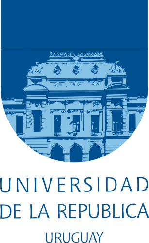

|
|
|
|
 |
|
|
|
|  |
|
| ASISTENCIA LIBRE |
|---|
| No se requiere |
|---|
| inscripción |
|---|
| (se emitirán |
|---|
| certificados |
|---|
| de asistencia) |
|---|
|
| Contacto: |
|---|
 |
|
The scientific meeting is intended to gather researchers, scientists,
practitioners and users of HPC in Latin America, to discuss the current
state of the discipline in our countries and the coordination for
developing joint projects between academia and industry, especially
within the STIC-AmSud program.

|
Venue: ANII, Rincón 528, piso 1. |
|
9:15 |
Opening: Rosa Wachenchauzer, President of the Scientific Committee, STIC-AmSud program. |
|
9:30 |
Plenary talk: "Interactive Visualization for Data Intensive Applications", Claude Puech(INRIA, France). |
|
10:30 |
Coffee break |
|
10:45 |
Plenary talk: "HPCLATAM: Hacia la integración de HPC en el Cono Sur Latinoamericano", Gonzalo Hernández (Universidad de Valparaíso, Chile), Esteban Mocskos (Universidad de Buenos Aires, Argentina), Sergio Nesmachnow (Universidad de la República, Uruguay)
|
|
11:30 |
Plenary talk: "Computational Language Acquisition: from language learners to language technology", Aline Villavicencio (Universidade Federal do Rio Grande do Sul, Brasil).
|
|
12:30 |
Lunch
|
|
14:00
to
18:00 |
Conference:
"High performance scientific computing in cluster, grid, and cloud computing systems"
Opening: Héctor Cancela, Franco Robledo, Gonzalo Tancredi, Universidad de la República, Uruguay
Speakers:
- Sergio Nesmachnow, Universidad de la República, Uruguay
- Claude Puech, INRIA, France
- Francisco Brasileiro, Universidade Federal de Campina Grande, Brasil
"A case for the coordination of the e-science ecosystem"
- Marcela Printista, Universidad de San Luis, Argentina
"Antecedentes de HPC en las Ciencias de la Computación en Argentina. Hacia la integración nacional y regional"
- Gonzalo Hernández, Universidad de Valparaíso, Chile
"A few examples of HPC Applications in Science and Technology"
"Development of the HPC in Chile: NLHPC"
- Ricardo Medel, Intel y Universidad Tecnologica Nacional, Córdoba, Argentina
"Creando una comunidad HPC: estableciendo lazos entre universidades, gobierno e industria en Argentina, Chile, Brasil y Uruguay"
- Sergio Pantano, Institut Pasteur de Montevideo, Uruguay
"Potenciales simplificados para simulaciones de biomacromoleculas: SIRAH, primer caso de desarrollo en sudamerica"
- Gabriel Usera, Universidad de la República, Uruguay
"NICCAD y Cluster-FING: Impulsando la computación científica de alto desempeño en el Uruguay"
- Julio Paciello, Universidad Nacional de Asunción, Paraguay
"Cluster de investigación aplicada con enfoque en el área HPC. Situación actual de proyectos"
- Harold Castro, Universidad de los Andes, Colombia
"Computación oportunista para HPC"
- Genghis Ríos, Pontificia Universidad Católica, Perú
"Legión: Proyecto de desktop grid computing aprovechando las aulas informáticas"
- Esteban Mocskos, Universidad de Buenos Aires, Argentina
"Lines of work in HPC: Resource information policies & hardware assisted terascheduling"
- Mario Storti, Centro Internacional de Métodos Computacionales en Ingeniería, CONICET, Santa Fe, Argentina
"Un solver de Mecánica de Fluidos Computacional basado en FFT para GPGPU"
- Martín Pedemonte, Universidad de la República, Uruguay
"Una década de GPGPU computing"
- Álvaro Pardo, Universidad Católica del Uruguay
"Procesamiento de Imágenes y Video utilizando GPUs"
|
|
Venue: Aulario Faro, Facultad de Ingeniería, Herrera y Reissig y Landoni. |
|
9:30
to
16:00 |
Joint events
Conference: "High performance scientific computing in cluster, grid, and cloud computing systems"
Seminar: "III Seminario multidisciplinario de computación científica de alto desempeño"
|
|